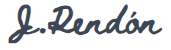
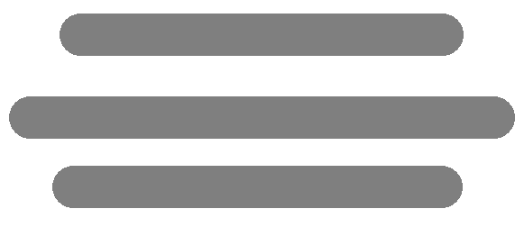
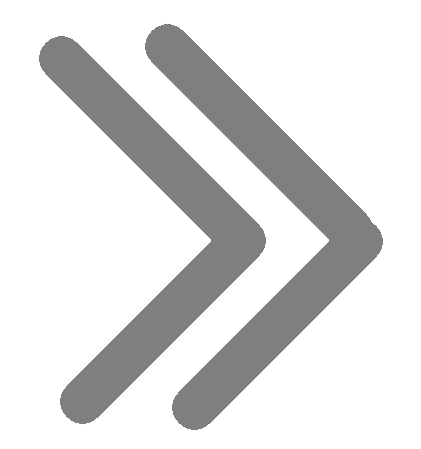

Inicio
Temas
Sintaxis y Selectores CSS
Interacción Humano Ordenador
Recursos
Vídeo explicativo
Ejemplo de aplicación
Aprendizaje
Actividad 1
Actividad 2
Acerca
Actividad 2
Esta página no se encuentra disponible por el momento
